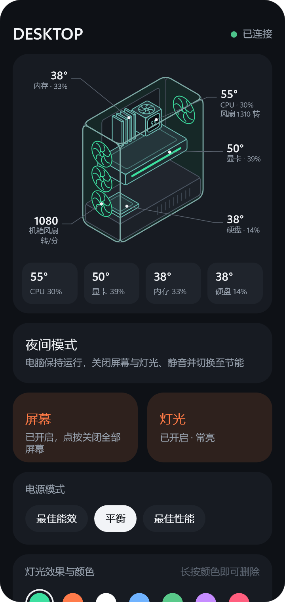
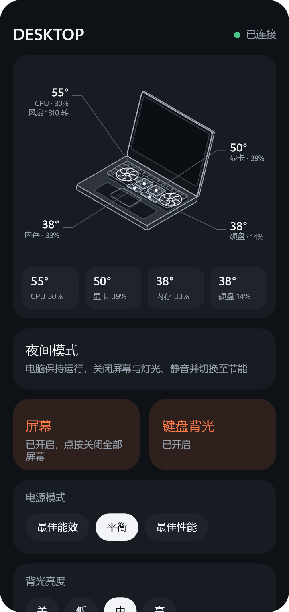

用手机遥控电脑
Your PC, from your phone
在手机上即可关闭电脑屏幕与灯光、调节音量和亮度，并查看电脑温度。电脑可继续下载文件、运行任务。
Turn the PC's screens and lights off, set its volume and brightness, and check its temperatures from your phone. The PC keeps downloading and running its tasks.


请在浏览器中打开本页面。在微信、小红书等应用内通常无法下载，请点击右上角菜单，选择“在浏览器中打开”。
Please open this page in your browser. Downloads usually do not work inside other apps. Use the app's menu to open the page in the browser.
安卓手机
Android
下载 Glance APP Download the Glance app下载速度较慢时，可改用其他下载源：GitHub
If the download is slow, use another source: Gitee
安装时手机会提示“来自未知来源”，这是因为本 APP 未上架应用商店，允许本次安装即可。本 APP 免费、开源，无广告，无需注册，支持安卓 8.0 及以上版本。
The phone will ask whether to allow an app from outside its store, because the app is not in an app store. Allow it this once. The app is free and open source, with no ads and no account required. It runs on Android 8.0 and later.
iPhone
iPhone 版 APP 正在开发中，目前可使用网页版。在电脑上打开 Glance 设置 → 手机遥控 → 配对一部手机 → 用网页，使用 iPhone 相机扫描显示的二维码，之后可将页面“添加到主屏幕”。
The iPhone app is in development. Until then, a web page is available. On the PC, open Glance's settings → Phone → Pair a phone → For the web page, and scan the code shown with the iPhone's camera. The page can then be added to the home screen.
连接电脑
Connecting to the PC
- 在电脑上安装 Glance（0.3.0 或更高版本），打开设置 → 手机遥控，开启开关。
- 在“配对一部手机”中点击“用 APP”，电脑上将显示一个二维码。
- 在手机上打开 Glance，扫描该二维码。手机与电脑需连接同一个路由器（同一 Wi-Fi 或有线网络）。
- Install Glance (0.3.0 or later) on the PC, open its settings → Phone, and turn the remote on.
- Under "Pair a phone", select "For the app". A code appears on the PC.
- Open Glance on the phone and scan the code. The phone and the PC must be connected to the same router (the same Wi-Fi or wired network).
遥控仅在您的局域网内工作，不经过任何服务器。每部手机拥有独立的配对密钥，可随时在电脑设置中移除。
The remote works only on your local network and goes through no server. Each phone has its own pairing key, which can be removed in the PC's settings at any time.